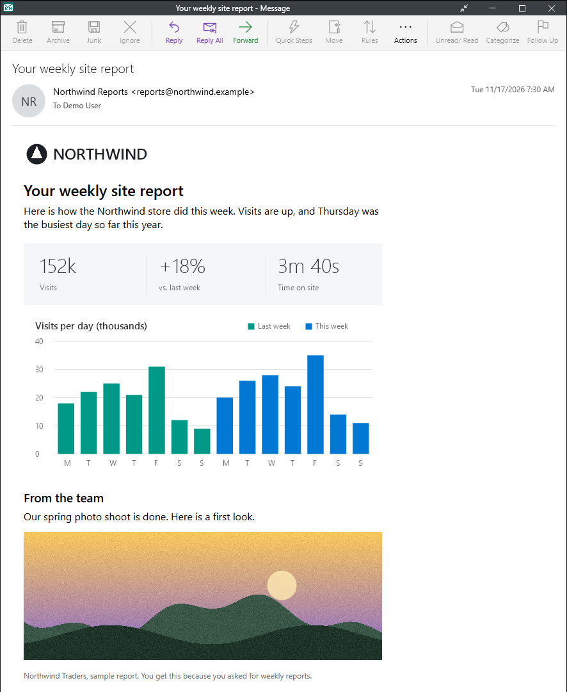
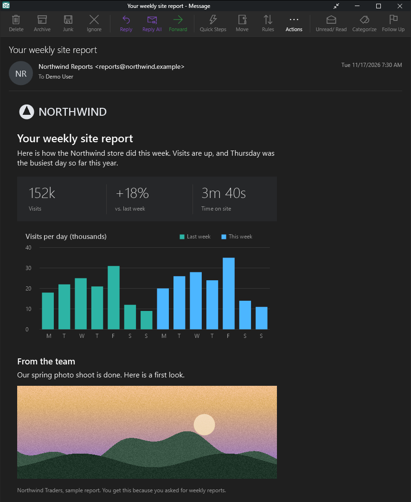

Dark Mode turns a message dark. Outlook stops there: the pictures stay as they were sent, so a traffic report or a chart is a white slab on the dark page. InCloseMail looks at each picture in the message and decides.
The picture below is the same sample report in both looks: switch this page between light and dark with the button at the top to compare.




- Charts, report panels and pictures of text go dark with the message, keeping their colors, so a whole emailed report reads as one dark page.
- Dark logos and icons on a clear background turn light, instead of vanishing dark on dark.
- Photos stay as sent, product shots on white included.
- Pictures from the web too: once you download a message’s pictures, each one is sorted the same way as it arrives, with nothing fetched twice.
- Mail designed dark is left as it is in Dark Mode: a newsletter or report on a black or navy page already reads well.
- And the other way around in light mode: mail designed dark (for example, a usage report on a navy page) is shown on a white page, its photos as sent and its dark charts and panels turned light with it, so the reading pane is never a black block in a light window.
- Worked out on your PC as the message opens, with no white flash. In Dark Mode, the sun button in the message header shows the original.
- Or never: check Never change the message background color in File → Options → General, and every message keeps the colors it was sent with.
Missing something you used in Outlook? Choose Help → Suggest a Feature in the app. Found a bug? Choose Help → Report a Bug.